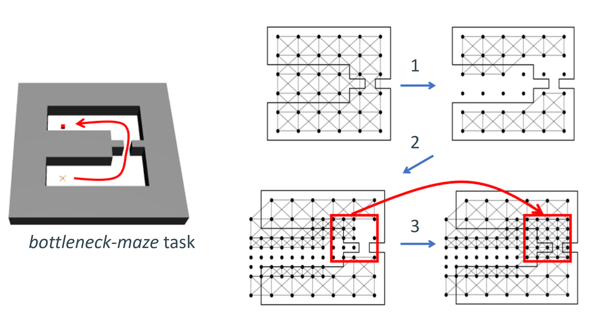
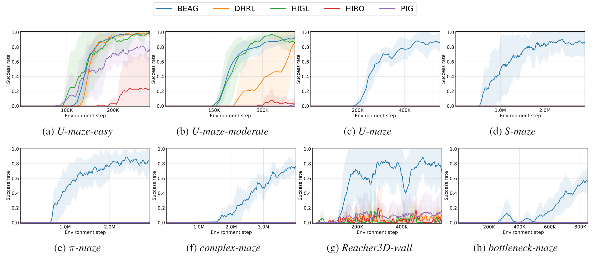

Illustration of breadth-first exploration. We compare the subgoal exploration strategies of [1] DHRL (state-of-the-art) and BEAG (ours) for U-maze task (a). (b, c) Each plot summarizes the statistics on the attempted subgoals at 5-th and 10-th training epochs, corresponding to 174K and 219K environment steps, respectively. DHRL expends a substantial number of attempts on impossible subgoals (on and over the wall), whereas BEAG spends virtually zero attempts on them. This demonstrates the efficiency of BEAG conducting the breadth-first exploration.

(a) DHRL

(b) BEAG
Animation of breadth-first exploration.
We visualize the exploration performance of DHRL and BEAG for the U-maze task.
DHRL repeatedly attempts impossible subgoals, while BEAG achieves challenging goals over the wall.
[1] Lee et al., "DHRL: A Graph-Based Approach for Long-Horizon and Sparse Hierarchical Reinforcement Learning", Advances in Neural Information Processing Systems 2022
Abstract
Graph-based planners have gained significant attention for goal-conditioned reinforcement learning (RL), where they construct a graph consisting of confident transitions between subgoals as edges and run shortest path algorithms to exploit the confident edges. Meanwhile, identifying and avoiding unattainable transitions are also crucial yet overlooked by the previous graph-based planners, leading to wasting an excessive number of attempts at unattainable subgoals. To address this oversight, we propose a graph construction method that efficiently manages all the achieved and unattained subgoals on a grid graph adaptively discretizing the goal space. This enables a breadth-first exploration strategy, grounded in the local adaptive grid refinement, that prioritizes broad probing of subgoals on a coarse grid over meticulous one on a dense grid. We conducted a theoretical analysis and demonstrated the effectiveness of our approach through empirical evidence, showing that only BEAG succeeds in complex environments under the proposed fixed-goal setting.
Proposed Method
Illustration of the BEAG. BEAG employs a grid covering the entire map instead of relying on graphs generated from the replay buffer which, may include unexplored or even impossible subgoals. BEAG follows paths generated from the graph and explores promising subgoals by removing edges connected to subgoals that have been experienced repeated failures.
Illustration of adpative refinement. To address the issue of failing to generate paths due to a breadth-first search, such as in a bottleneck-maze task, BEAG employs adaptive grid refinement: (1) Identifying unattainable subgoals until paths cannot be generated. (2) Performing dense refinement around one of the unattainable nodes. (3) Repeating step 1 and 2 until a successful path is found.
Theoritical Analysis
Illustration of theoritical analysis. According to our analysis: (a) BEAG can always generate a possible path if there exists an 𝜖-path. (b) The length of the grid path is at most \( (\left\lceil \frac{l}{\delta_0} \right\rceil + 1) \delta_0 \sqrt{K}\), where 𝑙 is the length of the 𝜖-path.
Main Results
AntMaze and Reacher3D environments. We evaluate graph-based RL methods in the set of MuJoCo environments depicted above, in challenging setups with sparse rewards over a long horizon. We note that the goal space for the AntMaze and the Reacher3D utilized 2-dimensional space and 3-dimensional space, respectively.
Success rates in various environments (fixed goal). We report the average success rate as a solid line and the standard deviation as a shaded region. Both BEAG and all other baselines are trained with a fixed initial state and goal setting. We note that certain baselines may not be visible in specific environments due to overlapping values, especially at zero success rates.
BibTeX
@inproceedings{yoon2024beag,
title={Breadth-First Exploration on Adaptive Grid for Reinforcement Learning},
author={Yoon, Youngsik and Lee, Gangbok and Ahn, Sungsoo and Ok, Jungseul},
booktitle={Forty-first International Conference on Machine Learning},
year={2024}
}